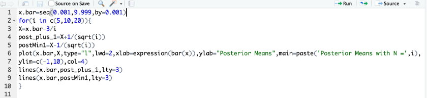
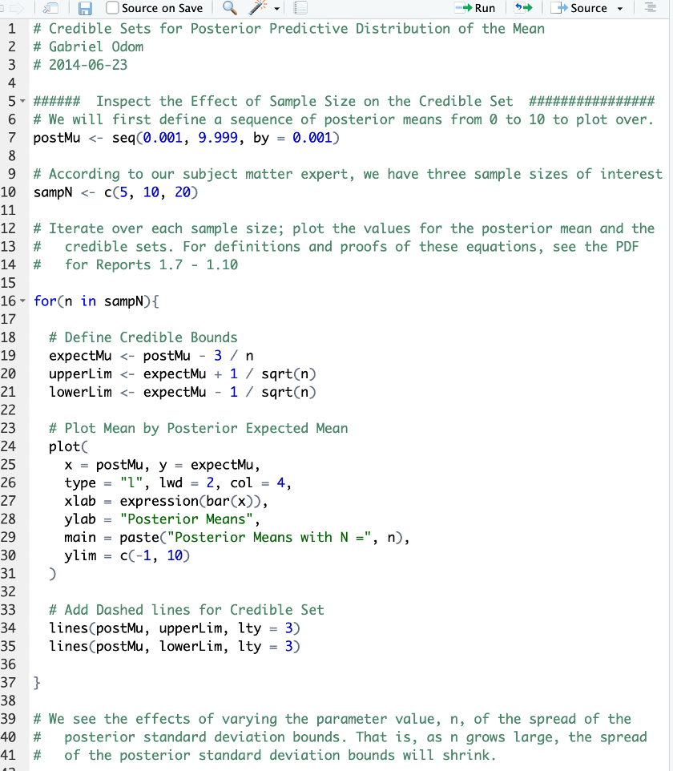
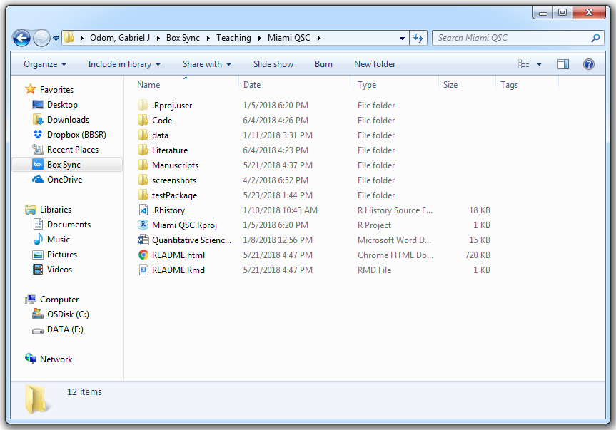
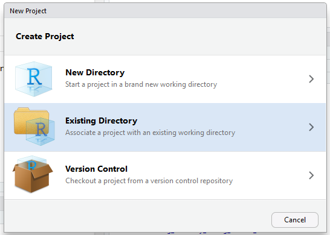
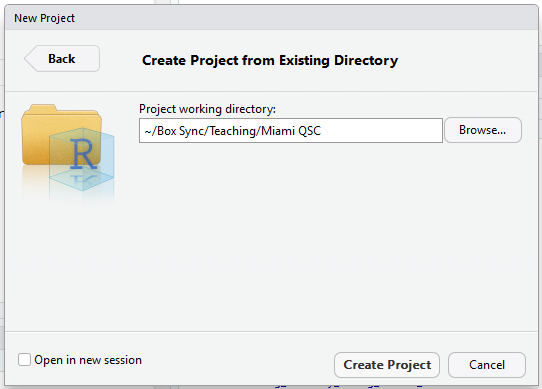

snake_case
camelCase
period.case
aBsoLUTE.andCOMPLETE_utternonsenseLesson 5: RStudio Projects
Review
What did we learn last class?
- The Layered Grammar of Graphics
- Loading a Package
- My First ggplot
- Mapping Aesthetics
- Geometric Objects
- Labels
- Color palettes and examples
Overview
We will cover the following:
- Naming Objects
- My First R Function
- Formatting Scripts
- Organizing your Files
- RStudio Projects
In this lesson, we will treat the data analysis process like writing an essay. An essay is often a written work describing or defending one particular point of the author. Essays are composed of paragraphs. A paragraph discusses a single part of the essay’s whole topic. Paragraphs are short collections of sentences, all in regard to the single point of the paragraph. Sentences are the building blocks of essay argumentation or description. Sentences are often built of subjects, verbs, and objects. People often use a text editor, like Microsoft Word or LaTeX, to write, format, and edit essays.
A code project is written work of computer code and paired descriptions completing one particular goal of the author. Projects are composed of code scripts. A code scipt implements a single part of the project’s whole goal. Scripts are short collections of commands and comments, all in regard to the single purpose of the script. Code commands are the building blocks of project execution. Code commands are often built of inputs, functions, and outputs. People often use an IDE (integrated development environment), like RStudio or jupyter, to write, format, and execute code.
| Writing | Coding |
|---|---|
| MS Word | RStudio |
| Essay | Project |
| Paragraph | Script |
| Sentence | Command |
| Subjects, Verbs, and Objects | Inputs, Functions, and Outputs |
Naming Objects: Objects are “Words”
We first discuss the building blocks of R code: objects, functions, and outputs. Remember, just like in proper English sentences, words have spaces between them. Youwouldn’twriteasentencelikethis, so don’t write your code like that either! Use spaces!
Everything is an Object
For the computer programmers out there, R is neither a purely “object-oriented” (OOP) language nor a purely “functional” (FP) language, but shows behaviour from both schools. For everyone else who either doesn’t know or doesn’t care about the OOP v FP distinction, this is the last we’ll talk about it. Remember this, however, everything in R is an object.
Object Names
As Shakespeare famously penned,
What’s in a name? That which we call a rose
By any other word would smell as sweet.
Romeo and Juliet, Act 2, Scene 2
Unfortunately for us, computer programmers were never very good at Shakespeare, so names are very important in writing good code. Look back to our two examples. Our objects are named myMessage_char and myAge_num. If you are reading my code, could you guess what those two things are? My age and my message, right? What about if we had named the objects Stuff, stuff, x, x1, morestuff, X, or omgNeedCoffee? Notice that cAsE MaTtErS. Use names that are short, but descriptive. There are a few conventions for naming things:
Notice another thing about my object names: they all end with a brief tag explaining what type of object they are (we will cover object classes in more detail next lesson). myMessage_char is a character string, while myAge_num is a number (numeric, technically). I recommend using camelCase followed by an abbreviation for the type of the object, but you can pick whatever convention you like (but please be consistent).
Exercises
- You have imported a spreadsheet of phenotype data for subjects with colorectal adenocarcinoma. What are some good names for this data set?
- You save a subset of the above data set with all HIV-positive males. Name this data set.
Functions: Code “Verbs” for a “Sentence”
Functions are the action words of R coding, and they are very flexible and powerful. Functions take in an object, and return another object (even if that object is empty). Remember, everything you do in R calls a function. We’ve already seen a special function: the <- (assignment) operator. This function took in our values, and assigned them to objects.
Important
Everything you do in R calls a function.
In grammatical parlance, a complete sentence is a subject and a verb, and most sentences also include an object of the verb. For example, “Tammy hit the ball hard” is a complete sentence. “Tammy” is the subject doing the action, “hit” is the verb showing the action Tammy did, “the ball” is the object Tammy acted upon (technically “the” is an adjective describing “ball”, but whatever), and “hard” is an adverb describing how the action was done. In code, functions are the verbs, the function arguments are the nouns and adverbs, and the output of the function is the object.
| Word in Sentence | Type of Word (English) | Analogue in R |
|---|---|---|
| Tammy | Noun | Primary Argument |
| hit | Verb | Function |
| the ball | Direct Object | Function Output |
| hard | Adverb | Secondary Argument |
Basic Function Syntax
Most R functions look like this: functionName(argument1 = value1, argument2 = value2, ...). This function is an object called functionName. We don’t know what it does, because the operations of the function are stored within the object functionName. We do know that it takes in two arguments with two values, and does something to them. Let’s use a function to create our first matrix (I’ve annotated the code to show its similarities with an English sentence):
# object verb subject1 adverb1 adverb2
myData_mat <- matrix(data = 0, nrow = 5, ncol = 2)
myData_mat [,1] [,2]
[1,] 0 0
[2,] 0 0
[3,] 0 0
[4,] 0 0
[5,] 0 0Notice a few things. We used a function called matrix (a verb) with three arguments (data, nrow, and ncol). This function did some things behind the scenes (as defined in the object matrix), and returned an output. This output is a matrix of zeroes (the “noun”) with two columns and five rows (adverbs controlling how the verb should work; not all functions use additional arguments to change their behaviour, but most do). The data input was recycled to fill the entire matrix.
Exercise
Label the “subjects”, “verbs”, “adverbs”, and “objects” in the following code:
ggplot(data = mpg) +
aes(x = displ, y = hwy) +
geom_point()Our First Function
So far, we have only used functions that R provided for us or functions out of supplemental R packages. However, there are many instances where we need to create our own functions. Because we know that functions are also objects, we can create them just like anything else: with a creation function. Function creation has the following syntax:
myFun_fun <- function(argument1){
body
}We can use this syntax to create a function to add two numbers (obviously this function already exists, but bear with me).
mySum_fun <- function(x, y){ x + y }
mySum_fun(2, 3)[1] 5We can create many of our own functions, and use these functions to accomplish very difficult tasks. This flexibility to create any function we can think of is one of R’s greatest strengths, but also part of what gives R its distinct learning curve.
Exercises
- Create a new function to greet someone good morning. The argument of your function should be
who, and it’s value should be a character. Hint: look up the help file for thepaste()function. - Modify your function so that it will greet you by default (with no argument value supplied to the
whoargument).
Function Best Practices
Because R is a functional language, the functions you write should be the most important pieces of your code. Functions in R, through their inherent vectorized efficiency, turn this
lsum <- 0
for (i in 1:length(x)) {
lsum <- lsum + log(x[i])
}into this
lsum <- sum(log(x))(This and other mortal R sins are covered in The R Inferno.) R is a functional programming language, so you must learn to use functions in your code. Furthermore, while this isn’t required, you should probably think about collecting the functions you write into a package. Here are some guidelines on writing functions:
- Functions should do one major thing, only that thing, and that thing well. A function that does a million things is easy to break and horribly difficult to check. Keep your functions simple, and you will not regret it.
- Major functions should be saved in their own script files. This encourages your project code to be compartmentalized and organized. For projects, this is very important for testing and organization. Overall, I strongly recommend you do not store all of your functions in one file. If you have a ton of functions to source all at once, create a package. Even if you never plan to release the code to anyone outside your group, create a package anyway.
- Utility functions can be collected into one file. Because you probably do not need extensive documentation or checking of utility functions, you can store all related utility functions together.
Documenting your Functions
Code comments are the glue that hold a collaboration team together across time and space. You write comments to three people: yourself today, yourself in six months, and people who have never seen your code. These comments will include:
- the function name and description,
- names and descriptions for each argument to the function,
- a description of what the function returns,
- a thorough commentary on how the function works,
- at least one working example, and
- citation, external links, internal links, etc. all as appropriate.
Comments always have a single space between the comment character (#) and the start of the comment. If your functions are not saved within a package, add these same comments as the first lines within your function. This ensures that the comments about the function always travel with the function.
Example:
CalculateSampleCovariance <- function(x, y, verbose = TRUE) {
# Computes the sample covariance between two vectors.
#
# Args:
# x: One of two vectors whose sample covariance is to be calculated.
# y: The other vector. x and y must have the same length, greater than one,
# with no missing values.
# verbose: If TRUE, prints sample covariance as a sentence; if not, not.
# Default is TRUE.
#
# Returns:
# The sample covariance between x and y.
#
# Example:
# CalculateSampleCovariance(x = rnorm(10), y = rnorm(10))
n <- length(x)
# Error handling
if (n <= 1 || n != length(y)) {
stop("Arguments x and y have different lengths: ",
length(x), " and ", length(y), ".")
}
if (TRUE %in% is.na(x) || TRUE %in% is.na(y)) {
stop(" Arguments x and y must not have missing values.")
}
covariance <- var(x, y)
if (verbose)
cat("The covariance is ", round(covariance, 4), ".\n", sep = "")
return(covariance)
}Writing Code Scripts: The Code “Paragraph”
Just like we use a word processor when writing an essay, we use an IDE when writing code. Here is the layout of the RStudio IDE. 
So far, most of the code we have typed has been in the Console (bottom left) after the code “prompt” (>). This is fine for writing a “sentence” or two at a time, but “paragraphs” should be written in the Editor (top left). In R, it is often very difficult to go back and edit your code once you execute it in the Console. If you write a script (“paragraph”) in the Editor, however, you can make as many edits as you need, all while keeping a record of your steps.
A New R Script
Let’s start a new script:
- Go to File > New File > R Script
- Type “Hello from my first Script!”
- With your cursor on the line you typed, press CTRL + ENTER to run your code.
You will notice that "Hello from my first Script!" appeared in the Console below, and your cursor moved to a new line in your script. You can write new commands and run them, or you can move your cursor back up to the previous line to edit the code that you’ve written.
Code “Paragraph” Rules
Just like written paragraphs in English have certain rules, code scripts also have rules and best practices to help keep your work organized. Let’s consider an example data analysis for argument’s sake. We need to import the data, clean it, wrangle it (more on this next class), analyze it, and graph the results.
These rules are loosely ordered by importance:
- All the code in one script should be related to one subtopic of your analysis. For instance, in the data analysis example above, we would create a seperate script for data import and cleaning, a script for wrangling and transformation, an analysis script, and a graphics script.
- Scripts should be named (and often dated) based on what part of the workflow they handle. For example, the analysis script may be called
breast_cancer_data_analysis_201906.R. Ordered files in a project pipeline should have leading numbers (00_clean_raw_data.R,01_explore_clean_data.R, …) to keep presentation orderly. - Partition chunks, or blocks, of code into sections with six pound signs on either side of a block title. This helps to keep your thoughts organized. Many times I will see that a code block has become very large, which prompts me that it should be it’s own script. In the RStudio IDE, when you name a code block, the name of that block will appear in the bottom left of the Editor pane, right next to the code GPS. If you haven’t organized your script into chunks yet, you should see
(Top Level)orUntitledin this space. Here’s an example:
###### New Code Section #####################################################
# A new code section in an R script is created with six pound signs (#), two
# spaces, the section description, two more spaces, and pound signs until the
# 80th character slot is reached.- Non-trivial code should be annotated with helpful or clarifying comments. Use the
#(pound sign, or hashtag, depending on your age) to comment a single line of code inR. When you add comments to your code, try as much as possible to answer why you wrote the code that you did and the way you did, rather than simply parroting what your line of code does. Remember, comments should never simply “parrot” the code. - Lines in your script should be at or fewer than 80 characters wide whenever possible. You can use the “Code GPS” on the bottom left of the Editor pane to tell you where in the script you are. Why 80 characters per line? Because we are slaves to tradition. Different people have different size computer monitors, and lines that are 80 characters wide can easily be displayed on all sorts of screens. Also, 80-character lines fit on a printed page or in vignette PDFs very well. This rule serves another purpose: if your lines are consistently over 80 characters, this is a signal to you that you need to make your code simpler. If this is not possible, then think of this as an opportunity to write a function to make your code cleaner.
- Use two spaces (no tabs) for indentation. If you ever decide to release a package, then spacing becomes important for R documentation and meta-data files. It’s good to get into the habit of using the “two-space” indentation rule in any case; also, the RStudio IDE does this for you automatically most of the time.
- Pad all operator calls with single spaces. Similar to the “80 characters wide” rule, this rule has no bearing on how the code executes, but makes a world of difference to human readability. An exception is commas: commas have one space after but no space before. Overall, don’tmakecodehardertoreadthanithastobe, and GIVE YOUR CODE SOME SPACE. Examples:
randErr_num <- rnorm(25, sd = 0.1)instead ofrandErr_num<-rnorm(25,sd=0.1).loss <- 3orloss < -3instead ofloss<-3.if (check) {instead ofif(check){
- Minutiae: Use
<-for assignment, not=. Do not end lines with;. Use double quotes instead of single quotes.
An Example
I’ll now show you some code that breaks some of these rules, and then some code that follows these rules.
Bad Code Formatting

Exercise
Talk with your neighbours. Can you figure out what this code is doing? Could you modify it for your own use? How could you make this script better?
Better Code Formatting

We will come back to this script later in the semester to make this even better.
Exercise
Open one of your previous scripts. Swap your computer with your neighbour. Have your neighbour point out some of the formatting mistakes, and you do the same for theirs.
Organizing Code Scripts with Projects: The Code “Essay”
We have written quite a few code sentences, and we have organized these code sentences in to code paragraphs (scripts). It’s time to create our code essay (project). Projects are the collection of script and data files that are necessary for, or the output of, an analysis workflow.
We care about good development because we want to make our pipelines and projects more efficient. However, efficiency has little to do with computational speed. Efficient computing is not about making bad code run faster. Why is this true? Human time is more valuable than computing time. Well-written code is easier to read and therefore easier to check for errors. Well-documented code is easier to use by other people. Writing a well-organized and well-documented project is better than writing a “fast” project almost every time. Efficiency is more about making you a better programmer, than it is about fast code or quickly-written projects.
Project code that can be easily understood (i.e. it requires comparatively little human time to understand), is more efficient than code that is just “fast”. Of course this doesn’t mean we don’t try to make our code fast—faster code is better than slower code! However, I have found in many real-life scenarios that writing well-organized and properly documented code leads to that code being “faster” as a byproduct.
I once worked with a statistician who organized all of their work files like so: all the input data for all of his projects in a data/ directory, all of his code (regardless of language or application) in a code/ directory, all of his graphs in a figures/ directory, all of his manuscripts in a documents/ directory, and so on and so forth. His boss transitioned one of his projects to me, and it was hell on earth. I spent weeks trying to find all of the documents scattered throughout his network drive. Don’t do that. Personally, I blame the old Windows OS for training people to use “file-type” organization instead of “project” organization.
Project Directory
Instead, organize your files by project. These directory names and contents are quite flexible. However, you should pick a directory design and be consistent with it. Here’s an example directory:

The project directory is for my lectures in the Quantitative Science Clinics for the Sylvester Comprehensive Cancer Center at the University of Miami. Within this directory, I have the following folders:
- Code (miscellaneous) or scripts. These are the code scripts to import and clean the data, perform the analysis, tidy the output, create figures and tables, and save the results. Remember, all of these scripts should be related to the current project!
- Package directory for the project (optional). If you created a package (pipeline) to analyze any data of a certain type, the package should be in the directory you use it (unless it’s a pipeline you use for many different projects, then it should probably be hosted on GitHub).
- Raw and clean data. Any input files go in this folder (even if you pre-process them). Unless the point of your project is to simply clean data, then cleaned data is not an output!
- Articles, user guides, or manuals (often for the literature review of the manuscript or report that you will write to accompany the project). These are the papers, books, articles, etc. you had to read to understand the project. This directory should also include setup documentation from your PI and any data dictionaries. Any written documentation that helped you set up your work or understand your team’s work goes here. Also, this is where you save the bibliography files.
- Written summaries and manuscript files (drafts, LaTeX logs, etc.). When writing a LaTeX manuscript or an .html report, I usually put each draft in its own subfolder. Also, when you write papers, make sure to mark the draft number as the first two characters of the file name; e.g.
01-draft_modifiedPCA.docx,02-draft_modifiedPCA.docx. I’ve often seen that one number isn’t enough (only 9 potential drafts). This keeps you from wasting time looking for the latest version. - Project README. This should be a simple text (
.txt) or markdown (.md) file that explains what the point of the project is, and where to find all of the important files. Also, this document should have the start date of the project, the date of the most recent major revision, and the names and emails of your main collaborators. This way, if you reference a “Mandy” somewhere in your notes or file names, everyone know you’re talking about “Amanda from the statistics department”. - Figures and tables (output files). If your paper has a results section, all that information goes here. Everything that is an “end” of an analysis goes here.
- RStudio Project File. If I were to double-click on this file, RStudio would open with all of my files that I was working in when I last saved that project. When you use RStudio projects, you don’t have to remember all the files you had in use and manually re-open them. I recommend that as soon as you have more that one script (or a single long script that you really should have broken into a few different scripts already—jeez), you create an RStudio project to organize your files.
DO NOT: Save your workspace
Get in the habit of starting the day’s work with a fresh environment. This will reduce the “it worked on my machine” errors considerably. You want to periodically restart R and re-run your scripts to ensure that the code results you are seeing aren’t the result of some hidden artefact or forgotten object definition. I restart my R session and re-run my scripts around once per hour or so. To quote the masters,
With your R scripts (and your data files), you can recreate the environment. It’s much harder to recreate your R scripts from your environment! You’ll either have to retype a lot of code from memory (making mistakes all the way) or you’ll have to carefully mine your R history. - Wickam and Grolemund, R for Data Science
To this end, I strongly recommend you remove the “restore workspace” option in RStudio (“Tools”” /> “Global Options”).

The keyboard shortcut for “restart and rerun” is CTRL + SHIFT + 0 (restart) then CTRL + SHIFT + S (source the current script). On a Mac, replace CTRL with CMD for the same effect.
DO: Create a Project
So that you don’t painfully lose your work every time you restart, RStudio offers built-in project creation. Once you have a directory with a few scripts, data files, output files, and / or graphs, create a project to hold it all.
- Go to File > New Project
- Select the “Existing Directory” option
 - In the “Project Working Directory”, click “Browse” and find the directory with your scripts and data files.
 - Click “Create Project”
Now, any work you do in that project will be associated with your previous work. All your files stay nice and organized. You will use this project to store figures for your publications, as well as the scripts you used to create them. This means that the next time your pesky reviewer asks you to change a plot label, you don’t have to deal with editing the .JPG or .PDF file—you can simply re-run the code to build a new picture! Your data files, analysis scripts, output .csv’s, and publication graphics all stay together under the project banner.
Exercises
- Create a folder for your work in this class.
- Create organized subfolders similar to what we discussed in class. The names and purposes for these folders are your prerogative.
- Read this article for tips on organizing your files: https://business.tutsplus.com/tutorials/how-to-organize-computer-files--cms-32191. I recommend project based folders with use-type subfolders. For example, I have a directory called “Teaching”, with a subdirectory for this class. That subdirectory is organized by the type or use of the files: “admin” for attendance, syllabus, and course schedule, “lectures” for my class notes, etc.
- Write an organization plan that you can stick with.
- Organize all the files on your computer. Start with your files and folders for your current degree. This will probably take a few days if you’ve never done it before. It could take a few hours if you haven’t done it recently.